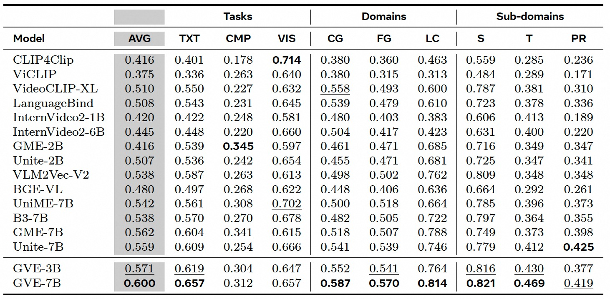

Towards Universal Video Retrieval: Generalizing Video Embedding via Synthesized Multimodal Pyramid Curriculum
arXiv Model (GVE-3B) Model (GVE-7B) Data (UVRB)Abstract
The prevailing video retrieval paradigm is structurally misaligned, as narrow benchmarks incentivize correspondingly limited data and single-task training. Therefore, universal capability is suppressed due to the absence of a diagnostic evaluation that defines and demands multi-dimensional generalization. To break this cycle, we introduce a framework built on the co-design of evaluation, data, and modeling. First, we establish the Universal Video Retrieval Benchmark (UVRB), a suite of 16 datasets designed not only to measure performance but also to diagnose critical capability gaps across tasks and domains. Second, guided by UVRB's diagnostics, we introduce a scalable synthesis workflow that generates 1.55 million high-quality pairs to populate the semantic space required for universality. Finally, we devise the Modality Pyramid, a curriculum that trains our General Video Embedder (GVE) by explicitly leveraging the latent interconnections within our diverse data. Extensive experiments show GVE achieves state-of-the-art zero-shot generalization on UVRB. In particular, our analysis reveals that popular benchmarks are poor predictors of general ability and that partially relevant retrieval is a dominant but overlooked scenario. Overall, our co-designed framework provides a practical path to escape the limited scope and advance toward truly universal video retrieval.
Methodology
We propose a co-designed framework that jointly rethinks evaluation, data, and modeling to advance video retrieval toward universality—defined as robust zero-shot performance across diverse query formats (textual, composed, visual), granularities (coarse- to fine-grained), and domains (spatial, temporal, partially relevant, long-context).
1. Universal Video Retrieval Benchmark (UVRB). We establish UVRB, a diagnostic evaluation suite comprising 16 datasets spanning 9 abilities: 3 query formats (Textual, Composed, Visual) and 6 domain-specific challenges (Coarse-Grained, Spatial, Temporal, Partially Relevant, Long-Context, and their combinations). Unlike conventional benchmarks that measure only end performance, UVRB enables fine-grained diagnosis of capability gaps and inter-task correlations.
2. V-SynFlow: Scalable Synthesis of High-Fidelity Training Data. Guided by UVRB 's diagnostics, we introduce V-SynFlow, a multi-stage synthesis pipeline that transforms weakly annotated web videos (e.g., WebVid, InternVid) into UVRD—a high-quality dataset of 1.55 million video retrieval pairs. V-SynFlow first applies multi-granular filtering (annotation rectification, cross-modal consistency, temporal dynamics) to construct a clean asset pool. It then leverages a multimodal large language model (MLLM) to enrich semantic content with controlled emphasis on spatial, temporal, and abstract attributes. Finally, it synthesizes diverse task formats—including text-to-video, image-to-video, and text+image-to-video—by conditioning MLLM generation on visual inputs and structured prompts.
3. Modality Pyramid: Curriculum Learning for Generalizable Embeddings. To effectively learn from UVRD 's heterogeneous tasks, we devise the Modality Pyramid, a bottom-up curriculum that exploits latent dependencies among retrieval abilities. Foundational tasks (e.g., image-video alignment) are prioritized early in training, while complex, composite tasks (e.g., long-context composed retrieval) are gradually introduced as the model 's representational capacity matures. Task scheduling is governed by an alignment-aware mechanism that estimates current task difficulty using a prober model and anneals sampling probabilities over epochs. The model—General Video Embedder (GVE), derived from Qwen2.5-VL—is trained with a symmetric InfoNCE loss, hard negative mining, and cross-device in-batch negatives, using parameter-efficient LoRA fine-tuning.
This tightly integrated benchmark-data-curriculum pipeline enables GVE to achieve state-of-the-art zero-shot generalization on UVRB, while revealing critical insights: (i) partially relevant retrieval is a strong proxy for overall universality; (ii) spatial and temporal reasoning remain largely disentangled; and (iii) conventional benchmarks poorly predict cross-task generalization. Our framework thus provides a principled path toward truly universal video retrieval.
Experiments
Video retrieval performance for datasets of UVRB. The AVG values are averaged over 16 datasets. For each column: highest score is bolded, second-highest is underlined. Metrics: R@1 (Recall@1), R@10 (Recall@10), P@1 (Precision@1).
Video retrieval performance by specific abilities (tasks and domains) on UVRB. The AVG values are averaged over tasks (textual (TXT), composed (CMP), visual (VIS)) and domains (coarse-grained (CG), fine-grained (FG), long-context (LC)) video retrieval tasks. Besides, we provide sub-domain results, including spatial (S), temporal (T), partially relevant (PR). For each column: highest score is bolded, second-highest is underlined.
BibTeX
@inproceedings{guo2025general-video-embedding,
title={Towards Universal Video Retrieval: Generalizing Video Embedding via Synthesized Multimodal Pyramid Curriculum},
author={Zhuoning Guo, Mingxin Li, Yanzhao Zhang, Dingkun Long, Pengjun Xie and Xiaowen Chu},
year={2025}
}